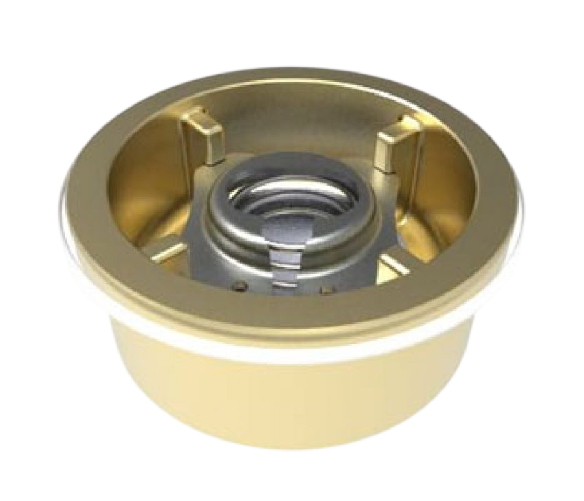

Обратный клапан межфланцевый (материал - латунь) Dn 32 Pn 16 (BCV)
BATU (Турция)
Раздел: Клапана СУГ · АГЗС
Цена и наличие — по запросу. Поставляем оригинал и аналоги. Доставка по России.
Модификации и размеры (9)
- Обратный клапан межфланцевый (материал - латунь) Dn 32 Pn 16 (BCV)
- Обратный клапан межфланцевый (материал - латунь) Dn 40 Pn 16 (BCV)
- Обратный клапан межфланцевый (материал - латунь) Dn 50 Pn 16 (BCV)
- Обратный клапан межфланцевый (материал - латунь) Dn 25 Pn 16 (BCV)
- Обратный клапан межфланцевый (материал - латунь) Dn 20 Pn 16 (BCV)
- Обратный клапан межфланцевый (материал - латунь) Dn 80 Pn 16 (BCV)
- Обратный клапан межфланцевый (материал - латунь) Dn 15 Pn 16 (BCV)
- Обратный клапан межфланцевый (материал - латунь) Dn 65 Pn 16 (BCV)
- Обратный клапан межфланцевый (материал - латунь) Dn 100 Pn 16 (BCV)
Подберём нужный вариант — уточните при запросе.
Описание
Обратный клапан межфланцевый (материал - латунь) Dn 32 Pn 16 (BCV) производства BATU (Турция) — позиция из раздела «Клапана СУГ» для АГЗС. Компания SYNDICAT поставляет оборудование и комплектующие для автозаправочных и газозаправочных станций по всей России. Цена и наличие «Обратный клапан межфланцевый (материал - латунь) Dn 32 Pn 16 (BCV)» — по запросу: оставьте заявку или позвоните, подберём оригинал или аналог и рассчитаем доставку.